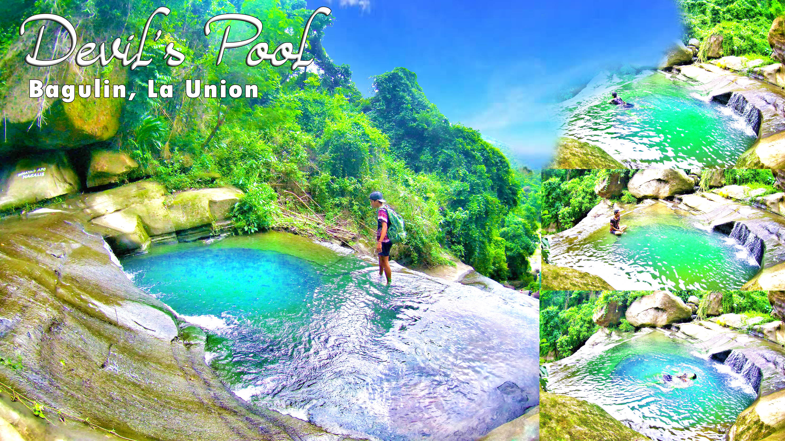
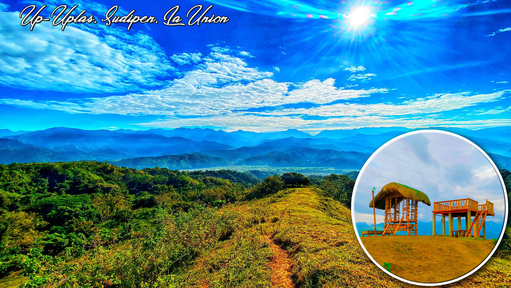
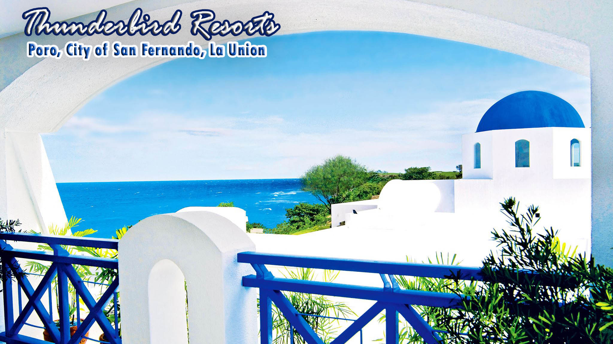
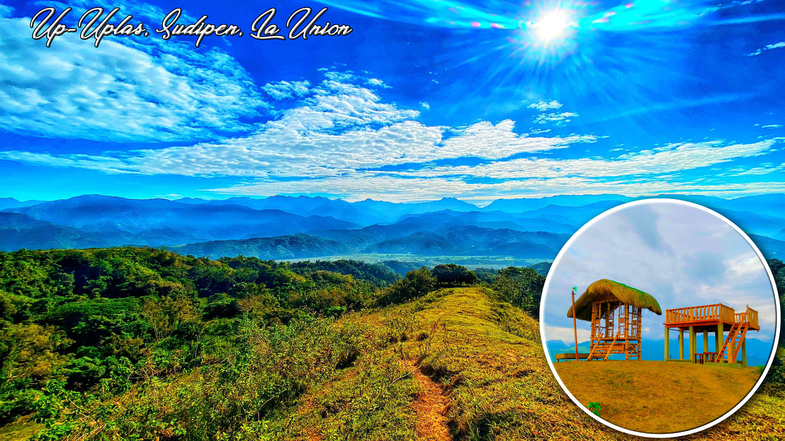
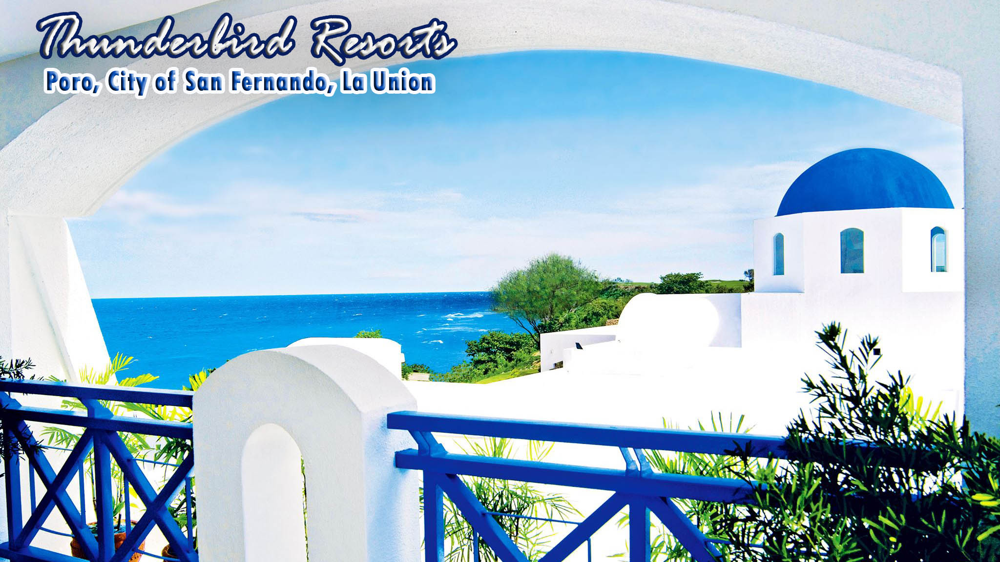
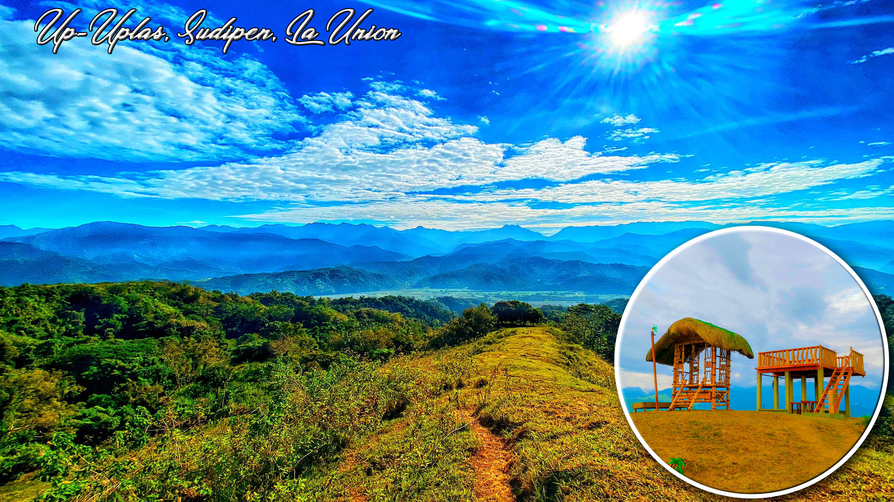
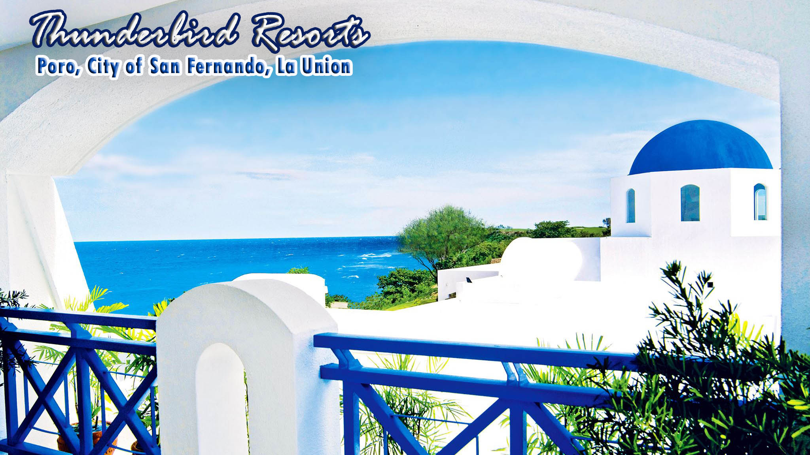
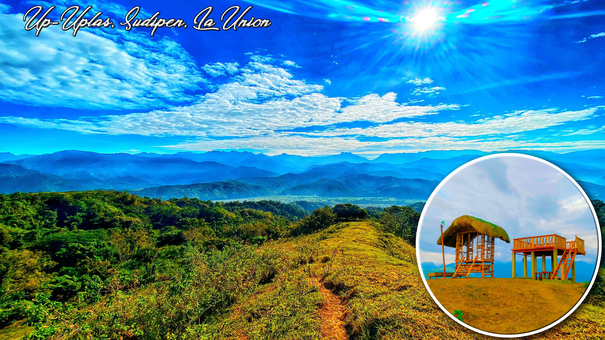
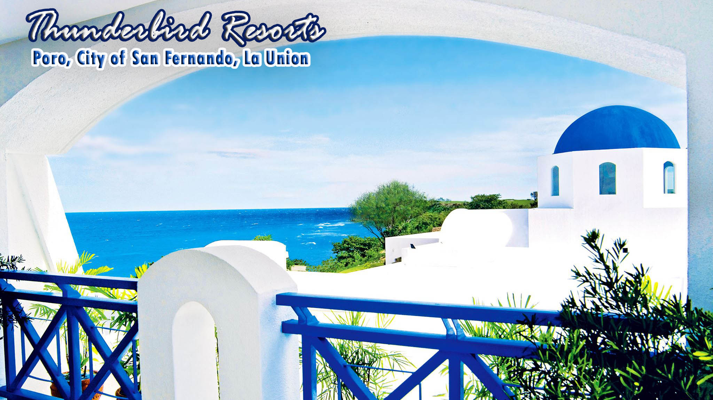

Elyu's Tourist Spots



 








Bacnotan (La Union) celebrated its 11th Diro Festival last May 2, 2019. "Diro" is an Ilocano term for honey which symbolizes unity and oneness for the Bacnoteñans. It is also the Bacnotan’s “One Town, One Product” under the program of the DTI. Officers and staff from Head Office and Bacnotan branch joined the float parade and distributed giveaways to the townspeople.
“Baggak” means “morning star,” and stands for the dawning of a new day for Bauang. During this event, it portrays the Ilocano spirit of unity and diversity of culture. This is also a suitable occasion and tribute to welcome and socialize with the balikbayan. Bauangenians are going all out in their costumes as they celebrate the Baggak (morning star) festival that is celebrated annually for the past years. Each year, there will be a new theme for the festival’s anniversary.
Buybuy Festival is a celebration of Burgos, La Union's Town Fiesta displaying their significant create "buybuy" or tiger grass. This crude material is made into soft brooms and other brightening things. Highlighted is a municipal parade, exchange reasonable and handiwork show. Social exhibitions can likewise be seen amid this time, their buybuy is not quite the same as among others since they had color it into numerous hues making it brilliant, bright and appealing.
NAGUILIAN is a landlocked municipality of the coastal Province of La Union. The Basi Festival is held annually in the celebration of it's one-town-one product "the basi" an organic wine from sugarcane. The town is also know for it's vinegar. Objective of the event is to promote “basi”, a wine made from sugarcane. Activities include street dancing, sport events, agri-trade fair & other amusement games.
During the Pindangan Festival, students from the elementary, secondary and tertiary levels, along with the different barangays and organizations in the city set foot to show off their best street dance steps and display their colorful costumes. The annual street dancing competition among the residents and students from various schools and barangays in the City of San Fernando is already a part of the big celebration of the town every month of March.
Sillag is an Ilocano word that means “illumination from the moon.” The two or three-day event features light-inspired activities such as a ceremonial lighting of Sillag Village, a musical show, and lantern parade. Several events are also organized to draw the attention of tourists and potential investors to let the locals experience the fun of summer. The event may include a variety of food fest, live music, children’s activities and fireworks display that you’ll love.
Pugo, La Union Tinungbo Street Dancing Parade. Bands slammed their instruments as street dancers performed their routine. These were coined as Agawis or the local’s invitation to fellow townsmate, Gaget or the portrayal of industrious farmers and fishermen, Rukbab or giving thanks especially after a fruitful harvest, and the movement of Pugo, or the bird where the town was named after.
Every Ilocano family has its own version of whipping up various kinds of dinengdeng dishes where culinary enthusiasts and food lovers are welcome to join in on the fun. Dinengdeng, one of the most popular of Ilocano dishes, will be cooked in a big clay pot with competitors is a festival associated with the much-loved Ilocano creating their best version of it. This festival highlights the Ilocano dish that is most popular and highly economical in the place.